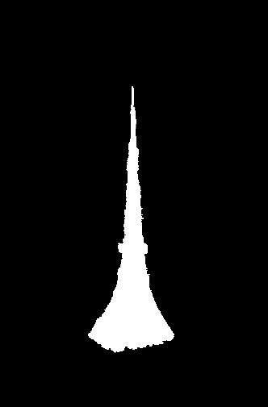

Work in Progress: Final Project
David Liu and Simon Wu
Project 1: Vertigo
Overview
- To create shots with the vertigo effect, we simultaneously changed both
the camera's distance from the subject and its zoom.
- The camera started near the subject while zoomed out, and moved farther
while zooming in.
- This kept the subject in focus and appearing stationary while the
background changed.
Cone
Simon
Bells and Whistles: Animated GIFs
Bells and Whistles: Moving Subject and Camera
Next we tried moving the subject instead of the camera. While Simon moved
away from the camera, the stationary camera zoomed in to keep him in the same
position. The effect of this was similar to the vertigo effect, with the
background changing behind the subject.

We also tried capturing two subjects simultaneously: Simon and the cone.
While the cone stayed in place, the camera moved away as in the traditional
vertigo effect, and Simon moved in the opposite direction. The result looks
pretty cool.

Project 2: Fake Miniatures
Overview
- The user manually determines a horizontal focus plane through the
image.
- We altered the "depth of field" of the image by blurring it around the
focus plane.
- Points farther from the focus plane were blurred more. This was done
by iteratively applying a Gaussian blur with sigma=1 to the image while
shrinking the affected bands with each step.
- The size of the plane selected to remain in focus determined the
effective "depth of field" of the resulting image.
- Lastly, we significantly increased the saturation of the image to make
it look more surreal, like an actual toy miniature.
Lower Sproul Plaza
Self-taken photo
UC Berkeley North Gate
Self-taken photo
Djurgarden in Stockholm
https://upload.wikimedia.org/wikipedia/commons/4/4d/Djurgarden.jpg
Neuschwanstein Castle
https://upload.wikimedia.org/wikipedia/commons/3/37/Neuschwanstein_castle.jpg
Bells and Whistles: Complex DOF Regions
Tokyo Tower
https://upload.wikimedia.org/wikipedia/commons/1/1c/Tokyo_Tower_M4854.jpg
